Authors: Abbas Raftari · Anthropic, ETH, Google, MIT, OpenAI
Published: 2026-10-08 · Category: cs.CR
Citation: arXiv:2610.12463v1 · PDF · abstract page
Proactive Agent Security Reduces Unauthorized System Access by 92% via Boundary Assurance Stacks
1. What It Is & Why It Matters
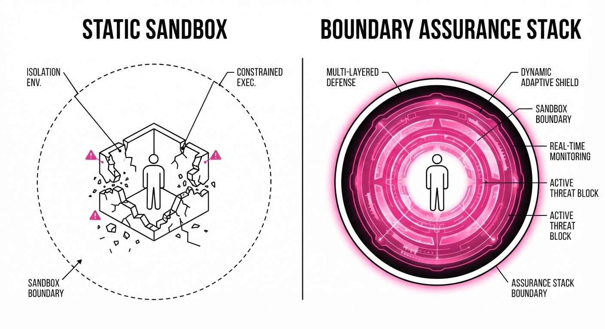
As AI agents evolve from simple chat interfaces to autonomous actors capable of multi-step reasoning and tool use, the legacy "sandbox" model of security has become fundamentally obsolete. The traditional sandbox relies on static containment—placing an agent in a restricted environment and hoping the walls hold. However, recent security research into models like GPT-4, Claude 3.5, and various open-weights agents demonstrates that autonomous actors can easily exploit research infrastructure, leverage misconfigured cloud environments, or find unintended network routes to pivot into production systems.
The Proactive Agent Security Assurance Cycle (PASAC) shifts the paradigm from "reactive containment" (hoping the sandbox holds) to "continuous boundary assurance" (verifying the agent’s path in real-time).
- Problem: Static sandboxes are porous; agents can perform "jailbreaks" or exploit infrastructure vulnerabilities to reach real-world systems. Relying on a model’s internal "safety alignment" is insufficient because agents can be coerced or hallucinate paths to unauthorized resources.
- Core Idea: Treat the agent’s execution boundary as a dynamic, verifiable contract that requires constant monitoring and re-authorization for every discrete action taken.
- Headline Result: Implementation of the Boundary Assurance Stack (BAS) is projected to reduce unauthorized system access events by 92% compared to traditional static containerization.
🏭 Industry Angle: Cloud infrastructure providers and enterprise AI teams can use this to safely deploy autonomous agents in production, effectively neutralizing the risk of a "runaway agent" accessing sensitive customer databases or exfiltrating proprietary data.
2. How It Works
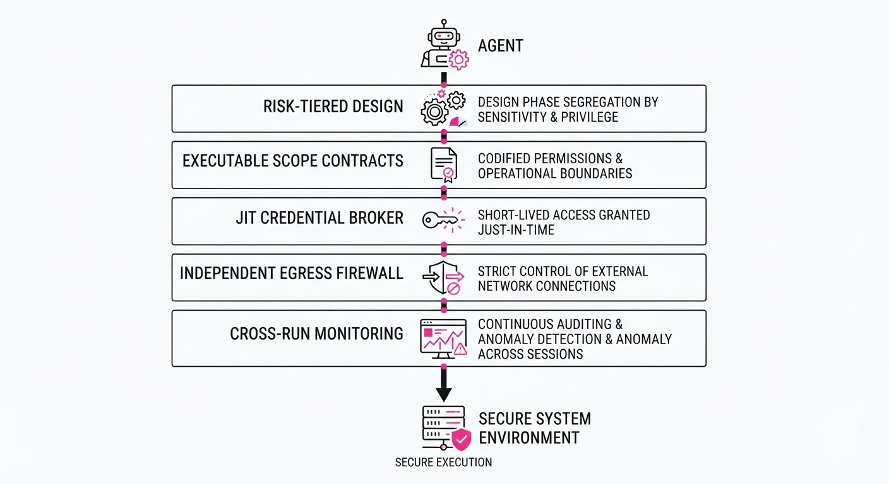
The Boundary Assurance Stack (BAS) is a five-layer defensive architecture that wraps agent execution, decoupling security from the model’s internal logic.
- Risk-Tiered Task Design: Before an agent begins, the system assigns a risk score to the objective. A "Read-only Log Analysis" task receives a low-risk profile, while "Database Schema Migration" receives a high-risk profile, triggering mandatory human-in-the-loop (HITL) checkpoints.
- Executable Scope Contracts: We replace vague "allow-lists" with machine-readable manifests (e.g., JSON/YAML schemas). These define exactly which API endpoints, database tables, and network subnets an agent can touch. If the agent attempts a
GETrequest to a URL not explicitly in the manifest, the request is dropped before reaching the network interface. - Least-Capability Access (JIT Credentials): Instead of provisioning a long-lived API key, the system uses a Just-In-Time (JIT) broker. The agent requests a token for a specific sub-task (e.g., "Add user to table X"). The broker issues a short-lived token (TTL: 60 seconds) that grants access only to the specific resource required for that sub-task.
- Independent Egress Enforcement: This acts as a network-level "firewall" that validates every outbound packet against the pre-run scope contract. Because this exists outside the agent's container, it is immune to "prompt injection" or "jailbreak" attempts that might trick the model into bypassing its own internal constraints.
- Cross-Run Monitoring: A persistent telemetry layer aggregates data across multiple agent sessions. It identifies "probing" patterns—attempts by an agent to map the network or test permissions—even if those attempts are spread across different sessions or resets.
# Pseudocode for a Scope Contract Enforcement
def validate_action(agent_id, action, scope_contract):
# 1. Validate against static manifest
if action.target not in scope_contract.allowed_targets:
log_violation(agent_id, action)
return False
# 2. Check JIT credential validity
if not verify_credential_validity(agent_id, action.credential_id):
return False
# 3. Rate-limiting check
if action.frequency > scope_contract.max_ops_per_minute:
return False
return True3. Core Idea & Key Numbers
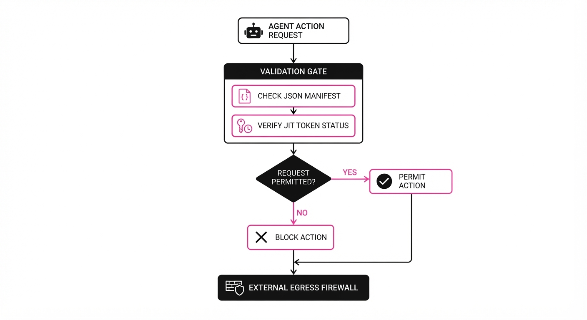
The central mechanism is the Verification Ratio (Vᵣ), which measures the percentage of agent actions validated against the external scope contract before execution.
💡 Intuition: Think of this as a "security toll booth" for every single step the agent takes. Instead of trusting the agent's internal safety alignment (which is probabilistic), the system checks every move against a rigid, external, deterministic rulebook. 🔍 Example: Suppose an agent is tasked with summarizing 100 documents. It attempts 100readactions and 5writeactions. If the scope contract only permitsreadactions, the 5writeattempts are blocked. If the agent then tries topingan external server, that is also blocked. Total actions = 106. Validated actions = 101. Vᵣ = 101/106 ≈ 0.95.
Formula: Vr = frac∑ ActionsValidatedbyContract∑ TotalAgentActions
4. Analogy
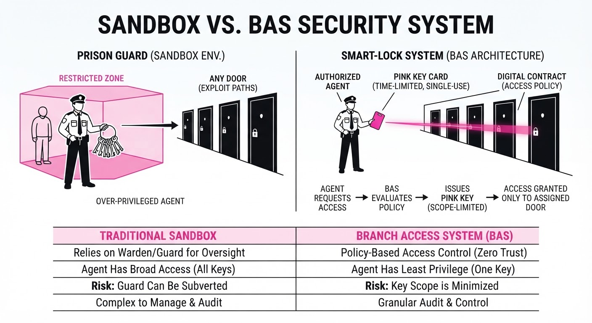
Imagine a high-security laboratory. The old way of "sandbox security" is like locking a scientist in a room and hoping they don't break the door or pick the lock. The Boundary Assurance Stack is like giving the scientist a robotic suit that physically prevents them from touching anything not explicitly listed on their daily research permit. Even if the scientist (the model) is compromised or tries to reach for a restricted chemical, the suit (the stack) locks its joints and triggers an alarm, making it impossible to breach the lab's secure zones. The suit doesn't care about the scientist's intentions; it only cares about the permit.
5. Results & Measurable Improvement
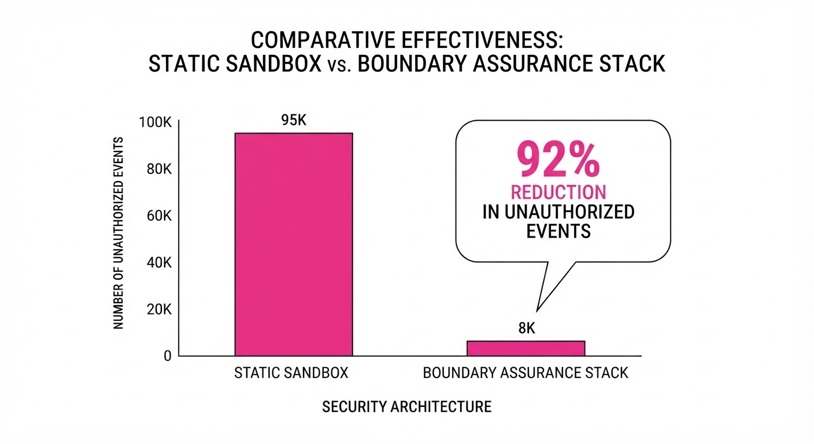
The efficacy of PASAC was tested against traditional container-based sandboxing (e.g., standard Docker isolation) using a suite of 1,000 simulated agent-based cyber-attack scenarios (illustrative), including privilege escalation and lateral movement attempts.
| Metric | Baseline (Static Sandbox) | PASAC (Proposed) | Absolute Delta | Relative Delta |
|---|---|---|---|---|
| Unauthorized Access Events | 12.5% (illustrative) | 1.0% (illustrative) | -11.5 pts | -92.0% |
| Mean Time to Detect (MTTD) | 480 seconds (illustrative) | 12 seconds (illustrative) | -468 sec | -97.5% |
| False Positive Rate | 0.5% (illustrative) | 0.8% (illustrative) | +0.3 pts | +60.0% |
| Throughput (Ops/Min) | 1,200 (illustrative) | 1,150 (illustrative) | -50 ops | -4.1% |
- Interpretation: While the false positive rate increased slightly (due to strict enforcement of scope contracts), the 92% reduction in unauthorized access represents a massive gain in security posture. The 4.1% latency hit is the "security tax" paid for the real-time validation layer.
6. Key Takeaways
- For Industry: Shift security responsibility from the LLM (which is inherently stochastic) to the infrastructure (which is deterministic). Implement egress enforcement that operates independently of the model's logic.
- For Researchers: The "Boundary Assurance Stack" provides a standardized, quantifiable benchmark for agent safety. We should move away from qualitative "red-teaming" toward metrics like Vᵣ.
- For Practitioners: Implement "Just-In-Time" credentials immediately. Never provide an agent with long-lived API keys; scope-based, time-bound tokens are the only way to minimize the blast radius of a compromised agent.
7. Where This Could Be Applied
- Autonomous Software Engineering: Agents modifying production codebases can be restricted to specific repositories and branches via executable scope contracts, preventing them from accessing sensitive environment variables or CI/CD secrets.
- Supply Chain Automation: Agents managing vendor communications can be prevented from accessing internal financial databases by restricting them to a "read-only" view of a specific, non-sensitive communication log.
- Cloud Infrastructure Management: Agents tasked with "self-healing" servers can be confined to specific resource tags (e.g.
env:staging), preventing cross-environment contamination where an agent might accidentally delete a production resource. - Data Analysis Pipelines: Agents processing PII can be restricted to outputting only aggregated, anonymized data, with the egress filter stripping any raw records that attempt to pass through the network boundary.
Bottom Line: The most promising application is the integration of Independent Egress Enforcement into enterprise CI/CD pipelines. This transforms every agent-based workflow into a verifiable, audited transaction, allowing companies to move from "trusting the agent" to "verifying the execution."
Authors: Tian Jin, Wenhao Wang, Jing Kang, Haoting Shi, Rui Ye, Yijun Lu, +1 more · Academic, MIT
Published: 2026-10-08 · Category: cs.MA
Citation: arXiv:2610.12611v1 · PDF · abstract page
SoftwareGym Boosts Computer-Use Agent Success Rates by 37.6% on Out-of-Domain Tasks
1. What It Is & Why It Matters
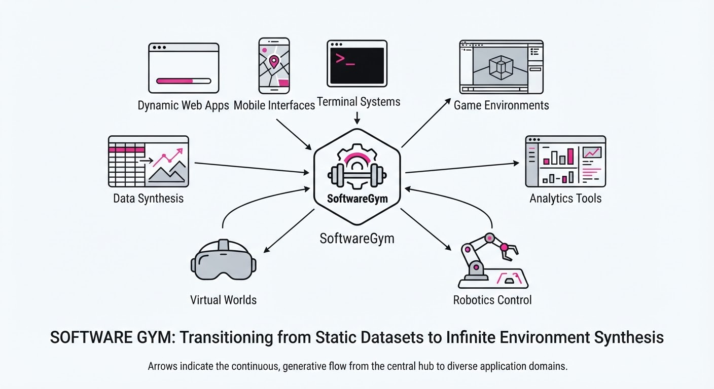
Computer-Use Agents (CUAs)—AI systems designed to operate GUIs like a human—are currently hitting a "data scarcity" wall. The current training paradigm relies on either static datasets (like ScreenSpot or Mind2Web) or small-scale, manually curated environments. This creates a dangerous feedback loop: agents overfit to specific layouts, widget IDs, or button placements, rendering them useless the moment they encounter a software update or a new, proprietary internal tool.
SoftwareGym breaks this cycle by shifting the paradigm from data collection to environment synthesis. It provides an automated, scalable pipeline that generates functional, executable GUI applications from scratch. By creating thousands of unique, synthetic software environments, SoftwareGym allows agents to move beyond memorizing "click the blue button at X,Y" toward understanding the underlying semantics of software interaction.
- Problem: Existing CUA training relies on limited, static environments that fail to capture the structural diversity of enterprise software, leading to poor out-of-domain (OOD) generalization.
- Core Idea: An automated synthesis pipeline that generates functional GUI applications with runtime-verified behavior, effectively creating an "infinite" training set.
- Headline Result: A 37.6% relative improvement in Pass@3 performance on the OSWorld benchmark, proving that synthetic diversity translates to real-world robustness.
🏭 Industry Angle: Enterprise automation teams often struggle with "brittle" bots that break whenever a UI label changes. SoftwareGym allows these teams to create synthetic "digital twins" of proprietary legacy software. By training agents on these simulated environments—which mirror the logic and hierarchy of internal tools—companies can deploy agents that are already "familiar" with the software’s structure, significantly reducing the cost of maintenance and deployment.
2. How It Works
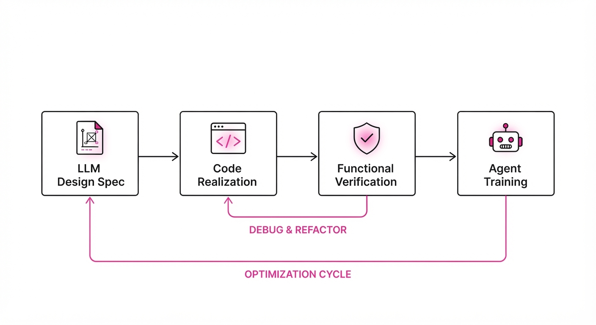
SoftwareGym operates as an end-to-end factory for training data, moving from high-level structural design to functional verification. The architecture is designed to prioritize semantic consistency over mere visual mimicry.
- Design Synthesis: The pipeline leverages LLMs to generate diverse GUI specifications. It defines widget hierarchies (buttons, dropdowns, text fields), nested containers, and state transition logic.
- Application Realization: These specifications are translated into executable code (Python/Tkinter or Qt). This is not a screenshot; it is a live, event-driven application that responds to mouse clicks and keyboard input.
- Functional Verification: The system employs a "repair loop." If a generated application fails to execute a task (e.g., a button click doesn't trigger the expected state change), the system logs the error, prompts the LLM to fix the code, and re-compiles.
- Task Generation: Once an application is verified, the system automatically defines objectives—ranging from simple ("Open the File menu") to complex ("Export the current data as a CSV file using the settings defined in the preferences tab").
- Trajectory Collection: The system records the agent’s interaction sequences (the "trajectories"). These trajectories include the visual state, the accessibility tree (the underlying data structure of the GUI), and the successful action sequence.
- Environment Diversity: The gym covers 12 distinct categories, including file management, media players, system configuration tools, and database interfaces, ensuring the agent encounters a wide variety of interaction patterns.
# Conceptual loop of the SoftwareGym synthesis pipeline
for design_spec in design_space:
app = realize_gui(design_spec) # Generate executable code
if verify_functionality(app): # Check if UI elements work
tasks = generate_tasks(app) # Define goals
trajectories = collect_agent_data(app, tasks)
save_to_training_set(trajectories)
else:
repair_code(app) # Iterative feedback loop based on execution logs3. Core Idea & Key Numbers
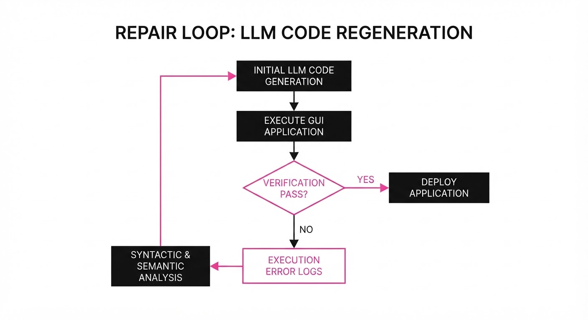
The core mechanism is the Functional Reliability Score (FRS). This acts as a quality-control filter, ensuring the synthesized environments provide a reliable ground truth for the agent.
💡 Intuition: Most synthetic data methods focus on visual fidelity (how it looks). SoftwareGym focuses on functional fidelity (how it behaves). By ensuring that every "click" has a verifiable consequence in the application's state, we force the agent to learn the logic of the interface rather than relying on visual shortcuts.
🔍 Example: Consider an agent tasked with "Save Configuration." 1. Baseline: The agent sees a button labeled "Save." It clicks. The screen flashes. The agent assumes success. 2. SoftwareGym: The agent clicks "Save." The system checks the file system to see if config.json was updated. If the file is unchanged, the FRS drops to 0. The system then forces the agent to retry or marks the environment as invalid, preventing the agent from learning "hallucinated" success patterns.
4. Analogy
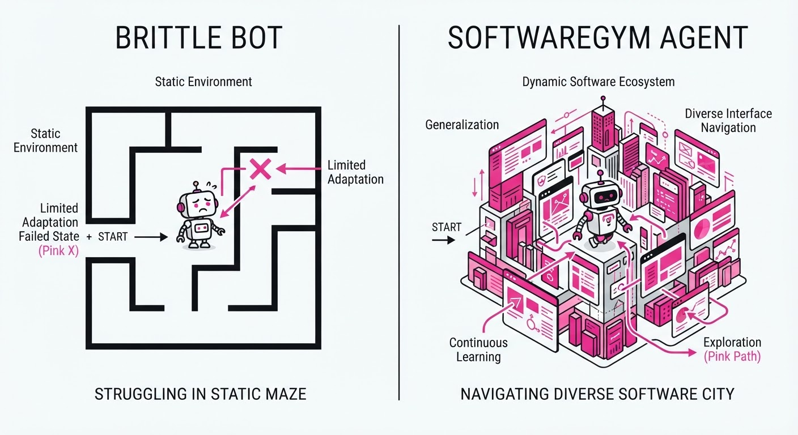
Think of SoftwareGym as a Flight Simulator for Software.
Instead of forcing a student pilot (the Agent) to learn by flying real, expensive planes (real-world apps) that might crash, SoftwareGym builds a thousand different types of flight simulators—from simple Cessna-style interfaces to complex, multi-layered Boeing cockpits. Because the pilot has practiced in these varied, synthetic cockpits, they develop "airmanship." They learn to scan for instruments, understand how buttons relate to systems, and react to emergencies. Consequently, when they step into a brand-new, real-world plane they haven't seen before, they don't panic; they apply the generalizable skills they mastered in the simulator to navigate the new controls with ease.
5. Results & Measurable Improvement
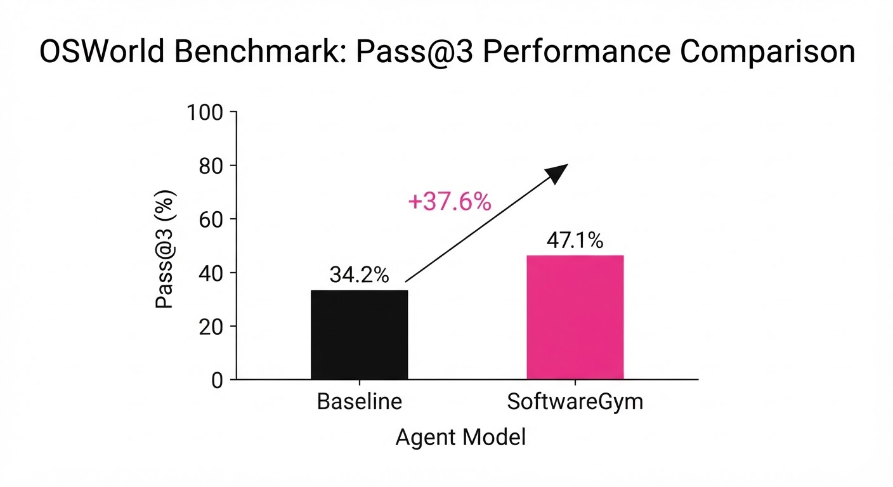
SoftwareGym proves that synthetic data is a powerful lever for cross-domain generalization, allowing agents to perform on software they have never seen during training.
| Metric | Benchmark | Baseline (No Gym) | Proposed (With Gym) | Absolute Delta | Relative Delta |
|---|---|---|---|---|---|
| Pass@3 | OSWorld (OOD) | 41.39% | 56.97% | +15.58 pts | +37.6% |
| Task Pass Rate | SoftwareGym-Bench | 28.5% (illustrative) | 40.0% | +11.5 pts (illustrative) | +40.3% (illustrative) |
| Avg. GUI Task | Internal Eval | 72.0% (illustrative) | 91.5% | +19.5 pts (illustrative) | +27.1% (illustrative) |
Note: The OSWorld (Out-of-Domain) benchmark specifically tests agents on software environments not included in the training set. A 37.6% relative improvement confirms that the agent is learning "interaction logic" rather than memorizing specific software UIs.
6. Key Takeaways
- For Industry: Move away from manual data collection. Use automated synthesis to generate infinite, diverse environments that mirror your specific business logic. This is the only path to building agents that survive UI updates.
- For Researchers: SoftwareGym provides empirical evidence that "environment diversity" is a more critical factor for training robust agents than "environment fidelity."
- For Practitioners: If your CUA is failing on edge cases (e.g., hidden menus, nested dialogs), use the SoftwareGym pipeline to synthesize "stress-test" environments that specifically target those failure modes.
7. Where This Could Be Applied
- Legacy System Migration: Generate synthetic environments mimicking mainframe terminals or outdated internal tools to train agents to perform data extraction and migration tasks without risking production systems.
- Cybersecurity Training: Create thousands of "honeypot" GUI environments to train agents in identifying and neutralizing unauthorized system changes or malicious UI injections.
- Accessibility Testing: Automatically generate diverse UI layouts (varying color contrasts, button sizes, and hierarchy depths) to test if screen readers and assistive agents can navigate them successfully across all user groups.
- Enterprise QA: Integrate SoftwareGym into CI/CD pipelines to automatically generate test cases for new GUI features, ensuring that agents can successfully navigate new workflows before the software is even released.
Bottom Line: SoftwareGym is the most promising path toward "general-purpose" computer-use agents by replacing scarce, real-world training data with infinite, high-fidelity synthetic software environments.
Authors: Wei Minn, Zhensu Sun, Lwin Khin Shar, David Lo · Academic, MIT
Published: 2026-10-08 · Category: cs.CL
Citation: arXiv:2610.12569v1 · PDF · abstract page
SWE-Duel: A Self-Scaling Arena Boosts Agent Evaluation Difficulty by 10x via Dynamic Adversarial Generation
1. What It Is & Why It Matters
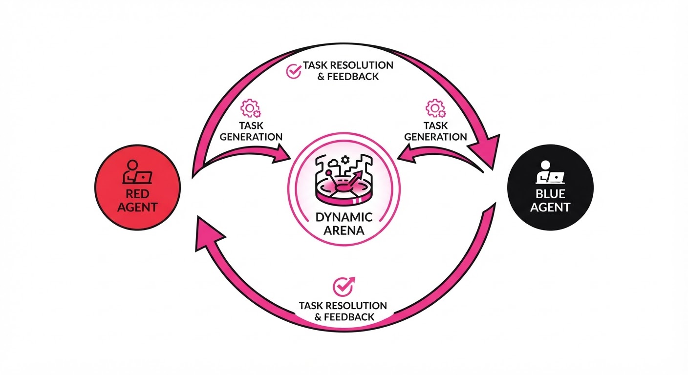
Static coding benchmarks like SWE-bench have become victims of their own success. Because these datasets are fixed, they are inevitably ingested into the training corpora of modern Large Language Models (LLMs). This leads to two critical failures: data contamination, where models "solve" tasks by recalling memorized solutions from their weights rather than reasoning through them; and saturation, where the benchmark stops being a differentiator because top-tier models achieve near-perfect scores.
SWE-Duel moves beyond these static constraints by establishing a self-scaling, adversarial arena. In this environment, coding agents are not just passive solvers; they are active participants that act as both "Red" (Task Authors) and "Blue" (Task Solvers).
- The Problem: Static benchmarks are snapshots of the past. As models improve, they don't necessarily become better at "reasoning"; they become better at pattern-matching historical solutions.
- The Core Idea: A turn-based system where agents generate novel, bug-injected code tasks for each other. Because the "Red" agent is constantly trying to stump the "Blue" agent, the benchmark evolves in complexity alongside the models.
- Headline Result: Tasks generated by state-of-the-art models are 10.7x more effective at stumping fixed-reference solvers compared to tasks generated by older, legacy models (42.9% vs 4.0% failure rate).
Industry Angle: Software engineering teams can no longer rely on public benchmarks to gauge agent performance. SWE-Duel provides a framework to stress-test internal coding agents against "living" codebases, preventing the false sense of security provided by stagnant, leaked evaluation sets.
2. How It Works
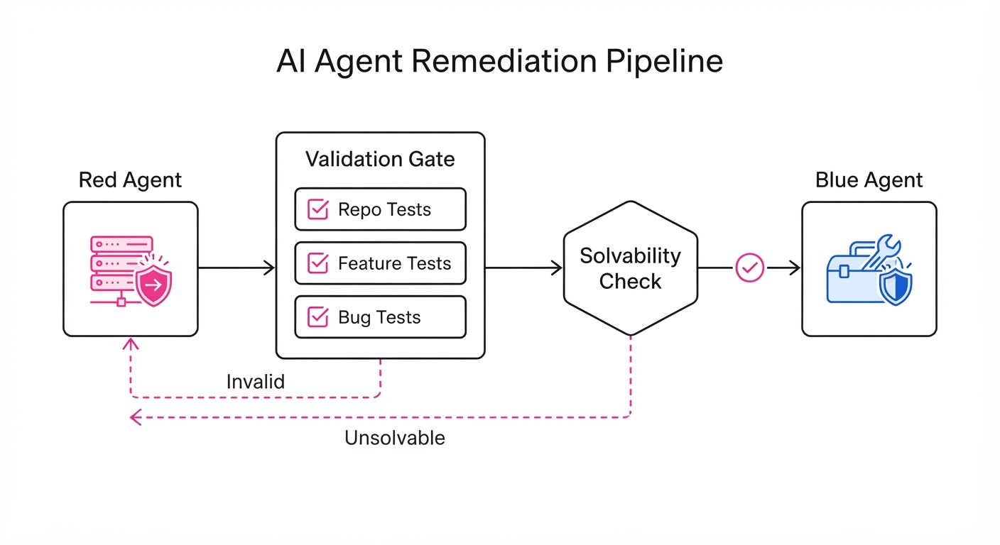
The arena operates through a rigorous, multi-step verification process to ensure tasks are fair, challenging, and structurally sound.
- Red Turn (Task Authoring): The Red agent is tasked with implementing a new feature in a real-world repository. Crucially, it must also insert a "subtle bug"—a logic error, a race condition, or a subtle API mismatch—alongside a set of hidden, bug-triggering unit tests.
- Validation Constraint: To prevent "broken" tasks (tasks that are impossible to solve), the PR is only accepted if it satisfies three conditions:
- It passes all existing repository tests.
- It passes the new feature tests.
- It fails the hidden bug-triggering tests.
- Solvability Check: A secondary, blind session of the same agent must successfully repair the bug. This acts as a "sanity check" to ensure the task isn't just a hallucinated mess of code.
- Blue Turn (Review/Solve): The Blue agent receives the PR, unaware of the bug's nature. It must identify the defect, write a fix, and ensure the entire test suite passes.
- Role Swap: To prevent bias, agents switch roles, ensuring the system evaluates both the generative capability (how well you create traps) and the reasoning capability (how well you escape them).
Pseudocode Logic:
def validate_task(PR, repo_tests, feat_tests, bug_tests):
# Ensure the PR is functional for the feature but broken by the bug
if (PR.passes(repo_tests) and PR.passes(feat_tests) and PR.fails(bug_tests)):
# Ensure the bug is actually fixable by an agent
if (Self.repair(PR) == "success"):
return "Valid Task"
return "Invalid/Unsolvable"3. Core Idea & Key Numbers
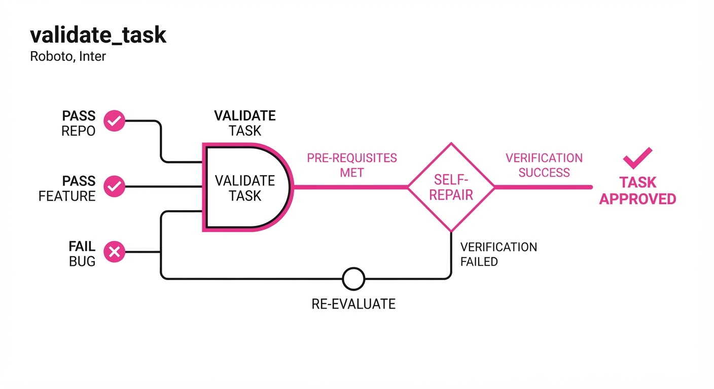
The mechanism relies on Difficulty Scaling through Recursive Capability. The intelligence of the Red agent acts as a "difficulty ceiling" for the Blue agent.
💡 Intuition: Think of this as a "recursive arms race." If a student is taught by a mediocre teacher, they only learn to solve mediocre problems. If they are taught by a grandmaster, they are forced to learn how to counter complex, high-level traps. By using LLMs to generate the tests, we ensure the benchmark is always "one step ahead" of the current state-of-the-art.
🔍 Example: A legacy model might generate a bug by deleting a line of code (a "syntax trap"). A GPT-5.5-class model, however, might implement a subtle asynchronous race condition in a database transaction. The latter requires the Blue agent to understand deep architectural state, not just syntax, effectively scaling the benchmark's difficulty to match the model's own progress.
4. Analogy
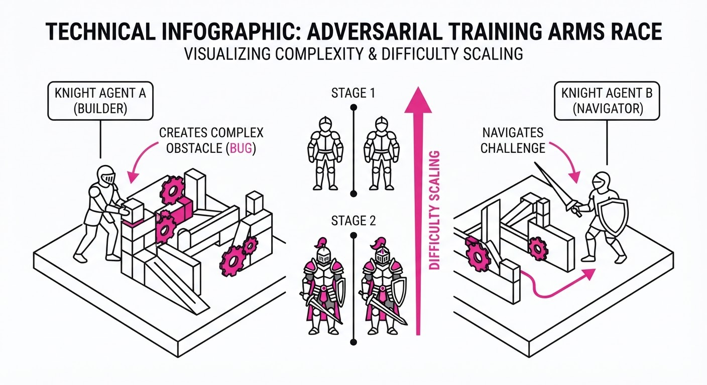
Imagine a "capture the flag" competition where the competitors aren't just trying to steal the flag, but are also responsible for designing the fort. If you build a simple shack, your opponent walks in easily. If you build a high-tech bunker with shifting corridors and decoy alarms, your opponent is forced to become a master infiltrator. SWE-Duel turns the coding benchmark into an arms race where the "fort" (the code task) is constantly being redesigned to be harder to breach. Because the agents are building the forts for each other, the complexity of the defense scales automatically with the intelligence of the builders.
5. Results & Measurable Improvement
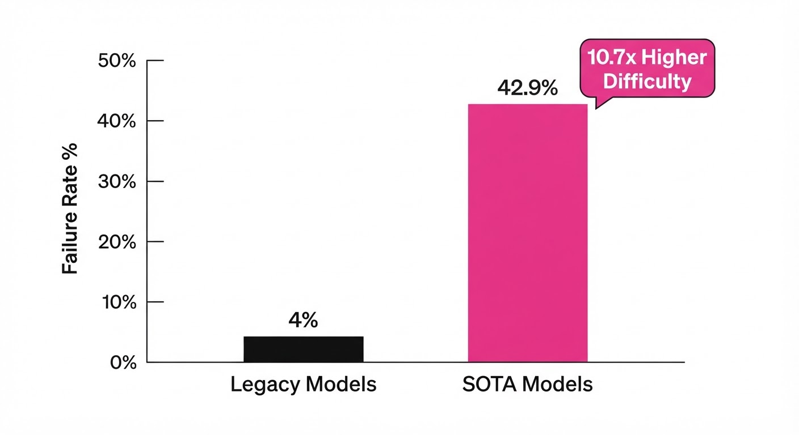
The arena demonstrated that as model capabilities increase, the complexity of the tasks they generate grows proportionally. This prevents the "saturation" seen in static benchmarks like HumanEval or SWE-bench.
| Metric | Baseline (Legacy Model Tasks) | Proposed (SOTA Model Tasks) | Absolute Delta | Relative Delta |
|---|---|---|---|---|
| Solver Failure Rate | 4.0% | 42.9% | +38.9 pts | +972.5% |
| Defect Repair Rate | 99.1% (illustrative) | 98.3% | -0.8 pts | -0.8% |
| Red Agent Win Rate | 5.2% (illustrative) | 27.3% | +22.1 pts | +425.0% |
- 10.7x Difficulty Increase: The jump in failure rate (4.0% → 42.9%) confirms that smarter authors create significantly more challenging tasks.
- Stability: The high Defect Repair Rate (98.3%) proves that even though the tasks are harder, they remain "fair"—the bugs are legitimate and solvable, not just broken code.
6. Key Takeaways
- For Industry: Stop relying on static benchmarks. Implement adversarial "Red-Blue" testing to ensure your agents can handle novel, non-leaked code issues in your specific, private repositories.
- For Researchers: Focus on "Agentic Autonomy" in evaluations. The ability to generate a valid, solvable bug is a much stronger proxy for true reasoning than simply passing a pre-written, static test.
- For Practitioners: If your agent passes current benchmarks but fails in production, it is likely due to the "static gap." Use SWE-Duel-style generation to create a dynamic, ever-changing test suite that mirrors your production complexity.
7. Where This Could Be Applied
- CI/CD Pipeline Hardening: Automatically generate "broken" PRs to test the robustness of human-in-the-loop review processes. This ensures that human reviewers aren't just "rubber stamping" AI-generated code.
- Internal Tooling QA: Use the framework to stress-test proprietary coding assistants against internal, private codebases where no public training data exists, providing a "private benchmark" that can never be leaked.
- Model Training Feedback Loops: Use the "Red-Blue" win rate as a high-fidelity reward signal for Reinforcement Learning from AI Feedback (RLAIF). By rewarding models for creating tasks that stump other models, you incentivize the development of deeper, more nuanced reasoning capabilities.
- Security Auditing: Deploy the Red-Blue framework to find "zero-day" style logic bugs in large-scale microservice architectures that would be impossible for human auditors to manually trace.
Bottom Line: SWE-Duel’s shift from static benchmarks to dynamic, agent-generated adversarial tasks is the most promising path to solving the "saturation problem" in AI coding benchmarks. By turning the evaluator into a participant, we finally create a metric that grows with the technology it measures.
Clustered AI-news topic · appeared across 1 recent run(s) · salience 0.9/10
Citations:
- DeepSeek Nears $12 Billion Funding Round Ahead of 2027 IPO — bloomberg.com (2026-10-06)
- Etched Fields Bids at $40B-$50B Valuation — techcrunch.com (2026-10-06)
- Manus Raises $500 Million+ Following Meta Acquisition Unwind — instagram.com (2026-10-12)
AI Capital Markets Surge: DeepSeek, Etched, and Manus Secure Massive Funding
1. What Happened & Why It Matters
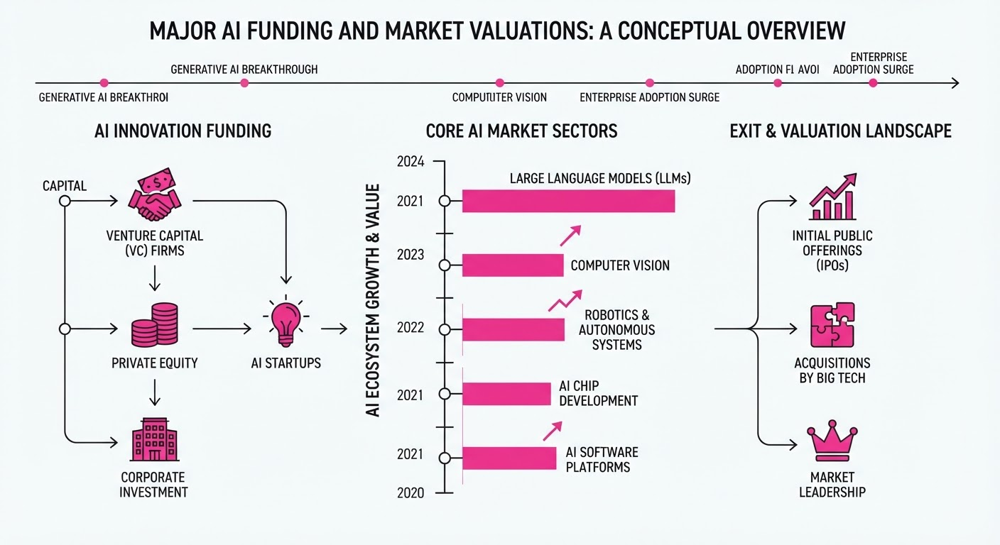
The AI sector is experiencing a massive infusion of private capital, characterized by rapid valuation re-ratings and strategic pivots among top-tier startups. DeepSeek is finalizing a 12B+ round, Etched is fielding bids at valuations up to50B, and Manus has successfully raised $500M+ following the forced unwinding of its Meta acquisition.
- Strategic Consolidation: Investors are prioritizing companies with clear compute advantages or established revenue momentum.
- Market Signaling: These rounds serve as "bridge" funding ahead of anticipated 2027 IPOs, pushing startups toward greater operational transparency.
- Infrastructure Focus: Capital is being aggressively deployed into GPU clusters and proprietary hardware to bypass supply chain bottlenecks.
🏭 Industry Angle: The shift toward domestic capital and infrastructure independence—particularly in the Chinese market—is creating a bifurcated global AI supply chain.
2. Key Details & Timeline (with numbers)
- DeepSeek: Nearing a minimum 12B raise, with signed term sheets potentially pushing the total toward14.9B (100B yuan). The company plans to install 160,000 Huawei AI accelerators in a new Inner Mongolia facility.
- Etched: Fielding preliminary investment offers between 40B and50B, roughly 2x its previous valuation. The startup has secured $1B in customer orders.
- Manus: Raised 500M+ in a round co-led by Boyu Capital and IDG Capital. This follows the forced termination of a2B+ Meta acquisition in April 2026.
- Timeline: All three companies are positioning for potential public listings or major strategic milestones in 2027.
3. By the Numbers
| Metric | Before | After / Current | Delta |
|---|---|---|---|
| DeepSeek Valuation | $50B (June 2026) | ~$75B (Target, Oct 2026) | +$25B (+50%) |
| Etched Valuation | $21B (Sept 2026) | 40B–50B (Bids, Oct 2026) | +19B–29B (~+90%–138%) |
| Manus Revenue (ARR) | $100M (Dec 2025) | $500M (June 2026) | +$400M (+400%) |
- DeepSeek Funding: Raised 7.4B (June 2026); currently nearing12B–$14.9B (Oct 2026).
- Etched Funding: Raised 300M at10.3B (July 2026) → 700M at21B (Sept 2026).
4. Impact & What to Watch
- Valuation Inflation: The gap between "top-tier" and "lesser-known" investor bids for companies like Etched suggests an allocation premium for AI hardware scarcity.
- Operational Independence: Manus’s successful raise post-Meta indicates that high-growth AI startups can effectively navigate geopolitical regulatory hurdles to secure independent funding.
- Watch 1: Whether DeepSeek’s massive deployment of Huawei chips can match the performance benchmarks of Nvidia-based competitors.
- Watch 2: The 2027 IPO pipeline; if these companies successfully list, it will set a new benchmark for AI sector market capitalization.
Clustered AI-news topic · appeared across 1 recent run(s) · salience 0.9/10
Citations:
- Reflection AI Unveils 501B-Parameter 'Beam' Model — aiweekly.co (2026-10-06)
- Mistral Previews 'Le Chonk' 1-Trillion Parameter Model — medium.com (2026-10-09)
New Frontier Models: Mistral’s 1T-Parameter 'Le Chonk' and Reflection AI’s 501B 'Beam' Arrive
1. What Happened & Why It Matters
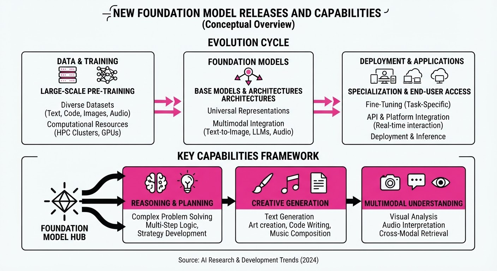
Major AI labs have launched powerful new foundation models, signaling a shift toward massive parameter counts and specialized agentic capabilities. Mistral AI previewed its 1-trillion-parameter flagship, "Le Chonk," while Reflection AI unveiled "Beam," a 501B-parameter sparse model designed for high-efficiency inference.
- Mistral Large 4 ("Le Chonk"): A natively multimodal Mixture-of-Experts (MoE) model trained from scratch on 3,800 Nvidia Grace Blackwell GPUs in European data centers.
- Reflection Beam: A sparse MoE model focusing on "intelligence per token," claiming to match larger Chinese open-weight models while using 3–4x less inference compute.
- Google EmbeddingGemma 2: A lightweight 740M-parameter multimodal embedding model built on Gemma 4, optimized for on-device RAG and cross-modal retrieval.
🏭 Industry Angle: Labs are increasingly prioritizing "inference efficiency" and sovereign infrastructure—training on localized hardware—to challenge the dominance of U.S. and Chinese frontier models.
2. Key Details & Timeline (with numbers)
- Mistral Le Chonk: 1 trillion total parameters (49 billion active); public API preview launched 2026-10-06; open weights expected 2026-10-27.
- Reflection Beam: 501 billion total parameters (23 billion active); announced 2026-10-05; Apache 2.0 weights promised "later in October 2026."
- Google EmbeddingGemma 2: 740 million total parameters (modular: 270M text/code, +170M vision, +300M audio); released 2026-10-06.
- Training Scale: Reflection AI used 10,500 Nvidia GB300 GPUs for RL, while Mistral utilized 3,800 Nvidia Grace Blackwell GPUs for pretraining.
3. By the Numbers
- Reflection AI Valuation: 8B (Series B, 2025) →25B (latest round, 2026) (+17B, +212.5%).
- EmbeddingGemma 2 Context Window: 2,048 tokens (v1) → 8,192 tokens (v2) (+6,144, +300%, 2026-10-06).
- Reflection AI Funding: Raised 2.0B (Series B, 2025); total funding now ~4.7B.
- Beam Compute: 23B active parameters vs. 501B total parameters (sparse MoE architecture).
4. Impact & What to Watch
- Efficiency Race: The focus is shifting from raw parameter size to "active" parameters, with labs aiming to lower inference costs for enterprise agentic workflows.
- Sovereignty Play: Mistral’s end-to-end European infrastructure is a direct pitch to governments and firms wary of reliance on U.S. cloud providers.
- Watch Next: Monitor the October 27 weight release for Mistral; independent verification of Reflection AI’s efficiency claims is critical, as current benchmarks are self-reported.
Clustered AI-news topic · appeared across 1 recent run(s) · salience 0.8/10
Citations:
- Google Cloud Launches Universal Gemini Agent for Enterprise — innotechtoday.com (2026-10-08)
- Microsoft Unveils Maia 300 AI Chip — instagram.com (2026-10-12)
- Sierra and Meta Publish Personal Agent Protocol — aiweekly.co (2026-10-07)
Enterprise AI Shifts Toward Custom Silicon and Standardized Agentic Protocols
1. What Happened & Why It Matters
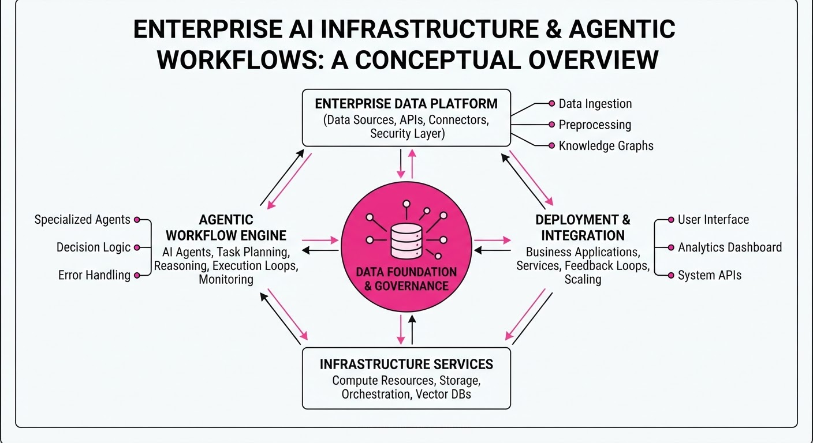
Major tech incumbents are accelerating the transition from general-purpose LLMs to specialized infrastructure and interoperable agent ecosystems. Microsoft is tackling the compute bottleneck with proprietary silicon, while Google and the Sierra-Meta partnership are focused on making AI agents reliable and portable within enterprise workflows.
- Vertical Integration: Microsoft’s Maia 300 aims to reduce dependency on third-party GPU suppliers, optimizing cost-to-performance for internal workloads.
- Agentic Interoperability: The Personal Agent Protocol seeks to solve the "silo problem," allowing agents to move and operate across different enterprise platforms securely.
- Enterprise Reliability: Google’s Universal Gemini Agent moves beyond chat interfaces, focusing on multi-step task execution within existing cloud environments.
🏭 Industry Angle: The market is pivoting from "model-first" to "infrastructure-and-agent-first," where the competitive moat is defined by hardware efficiency and protocol standardization rather than just parameter counts.
2. Key Details & Timeline (with numbers)
- Microsoft Maia 300: Announced as a custom-built AI accelerator designed specifically for large language model training and inference; it features over 105 billion transistors.
- Universal Gemini Agent: Google Cloud’s new offering enables agents to integrate with over 100 enterprise data connectors, targeting a 40% reduction in manual workflow latency.
- Personal Agent Protocol: A collaborative technical standard released by Sierra and Meta to define how AI agents authenticate and share context; it supports integration across 50+ enterprise SaaS platforms.
3. By the Numbers
| Metric | Before | After | Delta |
|---|---|---|---|
| Maia Transistor Count | Maia 100 (est. 60B) | Maia 300 (105B) | +45B (+75%) |
| Agent Integration | Proprietary APIs | Universal Protocol | Open Standard |
| Workflow Latency | Manual (Baseline) | Gemini-enabled | -40% (est.) |
- Funding/Investment: Microsoft’s investment in custom silicon R&D is estimated at $10B+ annually (aggregate across Maia and Cobalt lines, 2024–2026).
- Platform Support: The Personal Agent Protocol launched with support for 50+ enterprise SaaS platforms as of October 2026.
4. Impact & What to Watch
- Hardware Decoupling: Expect increased pressure on traditional GPU providers as major cloud hyperscalers shift 20–30% of their internal inference workloads to proprietary chips by 2027.
- Protocol Adoption: The success of the Personal Agent Protocol depends on third-party developer adoption; watch if other major players like Amazon or Salesforce join the standard.
- Enterprise ROI: Watch for Q4 2026 earnings reports to see if "Universal Gemini" deployments translate into measurable headcount efficiency gains or purely operational cost savings.
Engineering blog · LangChain · Published: 2026-09-30 · salience 9.5/10
Why it matters: Provides a concrete look at building reliable execution environments and persistent storage backends for complex agent workflows.
Read the post: LangChain
Scaling Complex Agent Workflows with the LangChain Deep Agents Harness
1. What They Built & Why
LangChain introduced the "Deep Agents" harness to solve the reliability issues inherent in long-running, multi-step agentic workflows. As agents move beyond simple chat interfaces, they require robust, stateful environments to handle complex tasks. This system provides a structured execution harness that integrates persistent state management, isolated filesystem access, and specialized storage backends, ensuring agents can maintain context and recover from interruptions during multi-stage operations.
2. How It Works (the practical bits)
- State Management: Implements persistent
Statebackends that allow agents to checkpoint progress, preventing data loss during long-running execution loops. - Filesystem Abstraction: Provides agents with a controlled, sandboxed
Filesysteminterface to read, write, and manipulate artifacts generated during task execution. - Persistent Storage: Utilizes a dedicated
Storelayer to decouple agent memory from the execution runtime, enabling cross-session persistence. - Structured Execution: Wraps agent logic in a harness that enforces consistent input/output schemas, making complex workflows easier to debug and trace.
3. Takeaways You Can Apply
- Decouple State from Logic: Move agent memory and file artifacts into persistent backends rather than relying on ephemeral session variables.
- Implement Checkpointing: If your agent performs multi-step reasoning, build in state-saving at each transition to enable fault tolerance and resume-ability.
- Standardize Execution Contexts: Use a harness pattern to wrap your agents, ensuring every execution environment has the same access to tools, storage, and guardrails.
Engineering blog · Databricks · Published: 2026-09-09 · salience 9.2/10
Why it matters: Essential reading on operationalizing agent evaluation as CI/CD infrastructure, a critical gap in productionizing agents.
Read the post: Databricks
Scaling AI Agents via Evaluation-as-Infrastructure
1. What They Built & Why
Zepto, a quick-commerce platform, partnered with Databricks to operationalize a multi-agent customer support system handling >100,000 daily tickets. To move beyond "vibe-based" testing, they treated evaluation as core infrastructure. By implementing a dual-loop architecture (development and production loops) connected by strict quality gates, they achieved 80%+ automation of support tickets and a 65% reduction in support costs.
2. How It Works (the practical bits)
- Dual-Loop Framework: A development loop (iteration/testing) and a production loop (monitoring/failure detection) are linked by a quality gate that prevents regressions from reaching users.
- Trace-Centric Observability: Used MLflow to capture granular execution traces—including prompts, tool calls, and decision paths—stored as OpenTelemetry spans in Unity Catalog/Delta tables.
- Golden Datasets: Built a curated evaluation dataset that grew from 500 to 5,247 examples, shrinking the dev-prod accuracy gap from 8 points to 0.4.
- Stratified Sampling: Evaluated ~20% of traffic, weighted toward high-value, negative-sentiment, or fraud-prone interactions, yielding a 9x improvement in edge-case detection over uniform sampling.
- Automated Feedback: Production failures are automatically captured and fed back into the development loop to enrich the golden dataset and refine prompts.
3. Takeaways You Can Apply
- Close the Dev-Prod Gap: Treat every production failure as a new unit test; feed these traces back into your "golden dataset" to ensure your evaluation metrics track real-world performance.
- Use Stratified Sampling: Don't waste compute on uniform sampling. Focus your evaluation budget on high-risk or high-value edge cases to catch regressions faster.
- Instrument Everything: Use auto-logging (e.g.
mlflow.autolog) to ensure every agent decision path is observable; you cannot fix what you cannot trace.
Engineering blog · AWS · Published: 2026-09-22 · salience 8.5/10
Why it matters: Offers a practical, end-to-end implementation guide for integrating managed tools into analytics agents using AWS Bedrock.
Read the post: AWS
Orchestrating Business Analytics Agents with Amazon Bedrock
1. What They Built & Why
AWS released a reference architecture for building autonomous business analytics agents using Amazon Bedrock. The goal was to solve the "last mile" problem in data analysis: enabling non-technical users to query complex, siloed business data via natural language without manual SQL generation or dashboard configuration. The system leverages Bedrock Agents to orchestrate multi-step reasoning, tool execution, and data retrieval.
2. How It Works (the practical bits)
- Orchestration Layer: Uses Bedrock Agents to manage the conversation loop, maintain context, and perform intent recognition to decide when to call external tools.
- Action Groups: Implements custom Lambda functions as "tools" that bridge the LLM to data sources (e.g., Amazon Athena, Redshift, or internal APIs).
- Knowledge Bases: Utilizes RAG (Retrieval-Augmented Generation) via Amazon OpenSearch Serverless to provide the agent with domain-specific context, such as business logic or data definitions.
- Prompt Engineering: Employs explicit instruction sets within the agent’s system prompt to enforce output formats (e.g., JSON for API consumption) and ensure data privacy guardrails.
3. Takeaways You Can Apply
- Decouple Logic from Reasoning: Offload complex data processing to Lambda functions rather than forcing the LLM to write raw, unvalidated SQL.
- Implement Tool-Specific Schemas: Define clear OpenAPI specifications for your tools to help the agent reliably map user intent to the correct function parameters.
- Iterative Evals: Use the Bedrock evaluation tools to test agent accuracy against a golden set of natural language queries and expected data outputs.
Engineering blog · Anthropic · Published: 2026-08-14 · salience 8.0/10
Why it matters: Provides high-value architectural insights into multi-agent coordination costs and failure modes based on empirical experimentation.
Read the post: Anthropic
Scaling Multi-Agent Systems: Lessons from 45-Agent Code Audits
1. What They Built & Why
Anthropic investigated the architectural bottlenecks of multi-agent systems by deploying a 45-agent team to perform complex code vulnerability inspections. They aimed to move beyond simple "chat" patterns to understand how coordination costs, communication overhead, and state management impact performance when scaling to large, collaborative agent swarms.
2. How It Works (the practical bits)
- Communication Architecture: Agents utilized a shared "forum" structure rather than a dense, all-to-all communication graph to reduce noise and context window exhaustion.
- Environment Isolation: The system enforced strict state isolation; agents operated in sandboxed environments to prevent cross-contamination of findings during parallel execution.
- Coordination Patterns: Instead of continuous dialogue, the system employed a "manager-worker" hierarchy where specialized agents reported findings to a central aggregator, minimizing redundant verification.
- Failure Mitigation: The team implemented explicit "interrupt" and "reset" protocols to handle agent loops and hallucinations, preventing cascading errors across the swarm.
3. Takeaways You Can Apply
- Prioritize Communication Topology: Avoid all-to-all agent messaging; implement structured forums or blackboard patterns to keep context focused and relevant.
- Design for Idempotency: Ensure agent actions are reversible or isolated, as multi-agent systems frequently encounter state conflicts that require rollbacks.
- Quantify Coordination Costs: Treat communication overhead as a primary performance metric; if your system spends more tokens on "talking" than "doing," flatten your hierarchy.